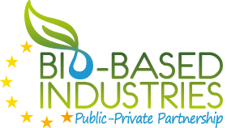

MAGNIFICENT

Reliable microalgae products serving market demands for a sustainable future.
MAGNIFICENT — Microalgae As a Green source for Nutritional Ingredients for Food/Feed and Ingredients for Cosmetics by cost-Effective New Technologies, is a 4-year project funded by BBI-RIA (Bio-based Industries Research and Innovation Action) with an EU contribution of EUR 5.330.572,50.

The MAGNIFICENT consortium has 16 partners from 7 EU countries including 10 SME's, 3 LE's, 1 University and 2 RTO's, and comprises commercial partners in the entire value chain at the 3 target markets. NatureXtracts participates in this project as a linked third party of the Portuguese partner, MadeBiotech. NatureXtracts role consist on the scale-up of the processes developed by MadeBiotech to an industrial level, which will contribute not only to achieve proof of concept, but also to effectively produce the extracts in quantities that will enable to supply partners that will work on the market and to run further tests on the products of the biorefinery. NatureXtracts also has a role as end user, working on the development of raw cosmetic ingredients and on their impact on final formulations.
The overall objective of the project is to develop and validate a sustainable and economically feasible new value chain based on cultivation and processing, with the aim to transform microalgae biomass into valuable ingredients for food, aquafeed and cosmetics applications. Development and validation of new product formulations of microalgae are included in the project.